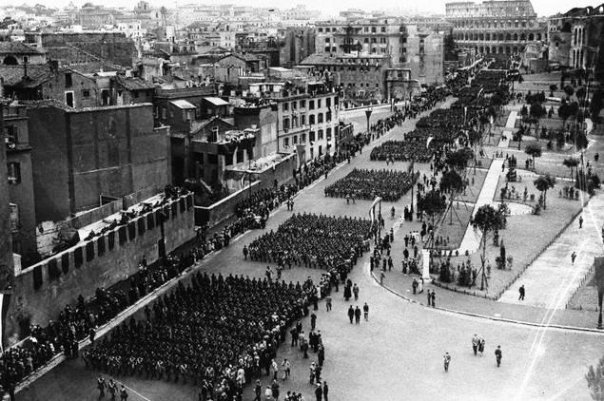

Fascist Rome
The first thing I learned about Rome’s transformations under Mussolini is that much of what I revere in Rome has a fascist context. In fact, the very area I live in is that fascist context. This produces a very disconcerting effect: the grandeur of this city is now mixed with horrific shadows.
What I find the most disconcerting is that the library in which I am studying is in the Palazzo Venezia itself. This means I sit in a room that Mussolini and possibly Hitler passed through. This means that every time I exit, my mind swirling with all I read, I stand below the famous balcony that Mussolini gave his speeches from. To my right towers the horrendous white monument to Vittorio Emmanuele, stretches the via del Mare, then I take a bus down via dell’Impero to go home. Piazza Venezia was Italian fascism’s very heart.

The demolition for these wide roads that traffic speeds through was incredible; whole areas were destroyed, people’s houses, hundreds, thousands of them, churches and piazzas, intimate alleys, a labyrinth of medieval buildings that Mussolini called slums. And maybe they were. The displaced were moved out of the city, given new apartments with new social services. No one complained or argued, after all, this was fascism.
What we have instead are major traffic arteries, and the fresh air Mussolini claimed to be freeing is now clogged with exhaust. These roads are not enjoyable to walk down. They rumble with the cars and buses speeding over the cobbles; in the summer and on the weekends they are crowded with tourists. Only on Sunday, when the Fori Imperiali is closed to traffic can one enjoy the vistas.
And this is what stumps me, sometimes, the views these roads afford are breath-taking.
Go towards the centro storico on the Fori Imperiali and Trajan’s column hovers, head in the opposite direction and it’s the Colosseum. These views, this focusing on the grandeur of Roman Imperialism was part of Mussolini’s plan, to “liberate” the ancient and great monuments, to marry past conquests with future ones. When I first came to Rome nearly 8 years ago, I was stunned by this very grandeur. I vividly remember passing through Piazza Venezia and catching a brief glimpse of the Colosseum and finding it so satisfying.
To mourn the Rome that has been destroyed is ridiculous, but tie it up with fascism and it’s depressing. If anything, when I catch a ride through Rome, I must now remember to thank Mussolini.
Commentary for Fascist Rome
· · · · · · · · · · · · · · · · · · · ·
1 On Saturday 05 February 2011 Frankie wrote:
Interesting. I admit I have rarely viewed Rome through this lens. Thanks Amber! :)